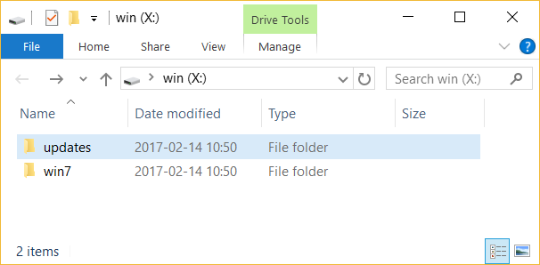
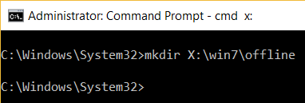
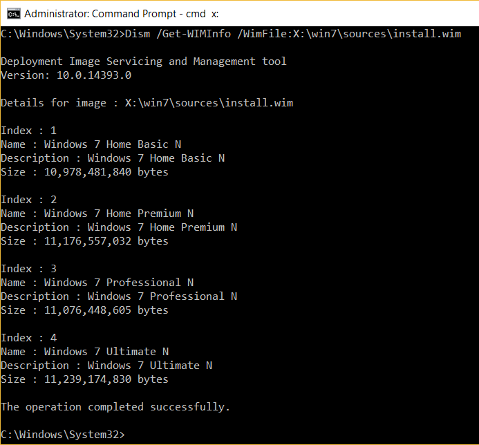
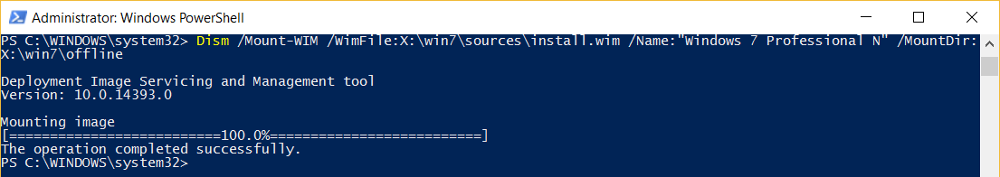
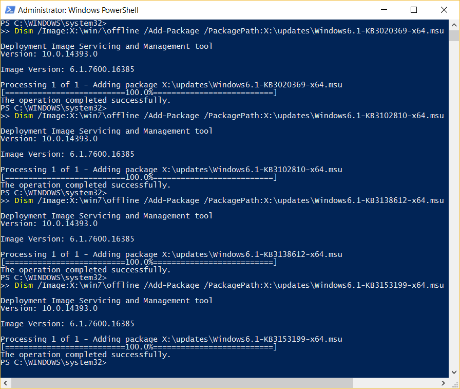
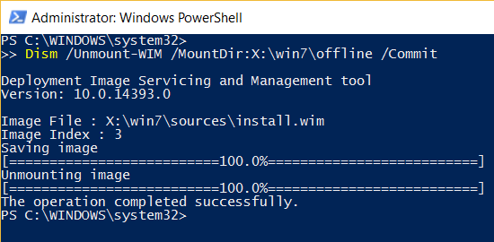
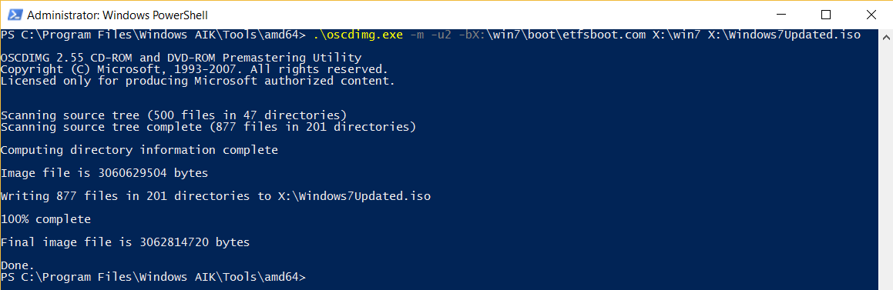
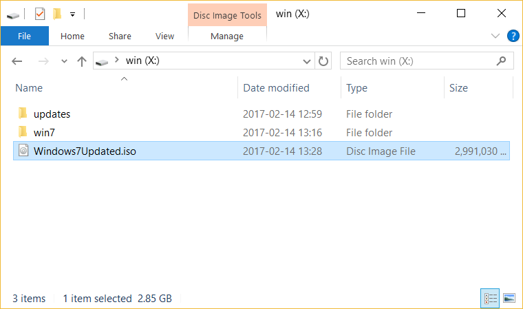

Windows AIK (KB3AIK_EN.iso) https://www.microsoft.com/en-us/download/details.aspx?id=5753
Windows 7 iso can be found directly from Microsoft.
Virtual CD-ROM Control Panel https://www.microsoft.com/en-us/download/details.aspx?id=38780
Download them all into a new directory e.g. X:\updates
Mount the ISO (you can just double click on it in Windows 10) then click on the installer StartCD.exe.
Select Windows AIK Setup once installed exit out of the program.
Create two directories (folders) X:\win7 and X:\updates.

If you don’t have an X: drive then just create them in a drive that you do have access to (e.g. C:) and use directory names that make sense to you.
You can create them on the command-line with the mkdir command:
mkdir X:\win7
Mount the Windows 7 iso image then drag and drop all content into X:\win7.
Deployment Image Servicing and Management is the program that will allow us to update our install disc.
Open up PowerShell with administrative privileges (Run as Administrator).
I tried this with a Command Prompt with administrative privileges and on the first computer I tried it on it worked. On the second and third that I tried it on it gave me a ton of error codes (3, 87, 161, etc.) and going through the log file I found a bunch of failures due to what it claimed were missing DLLs (SiloedPackageProvider.dll) and not to mention claims of missing directories that were in fact there (X:\win7\offline\Windows). So, just try with PowerShell. It’s a lot nicer than the Command Prompt anyway.
First we need to find out the name of our Windows 7 version, to do so run the following command:
Dism /Get-WIMInfo /WimFile:X:\win7\sources\install.wim

At the end of this page you’ll find a list of all commands. If you’re not using the default locations X:\win7 and X:\updates then stick the list in a text editor and replace all instances of both of those with the paths you are using.
Also on the last command change the final destination for your .iso.

This displays, among other details, the names available on the installation disk. We’ll be using Name : Windows 7 Professional N. Write down the one that is appropriate for you.
Create a new directory named offline in the Windows 7 directory.
mkdir X:\win7\offline
This will place the necessary Windows files in the offline directory:
Be sure to change the name to match that of your version.
Dism /Mount‐WIM /WimFile:X:\win7\sources\install.wim /Name:"Windows 7 Professional N" /MountDir:X:\win7\offline

Instead of the /Name:“Windows 7 Professional N” option you can use the /Index:3 option, which is a lot easier.
Whilst not required it is recommended to install from oldest to newest.
Dism /Image:X:\win7\offline /Add‐Package /PackagePath:X:\updates\Windows6.1‐KB3020369‐x64.msu
For the updates provided in this guide just replace KB3020369 with the name of each update. However, be aware that not all updates have the same naming convention. e.g. AMD64-all-windows6.1-kb3125574-v4-x64_2dafb1d203c8964239af3048b5dd4b1264cd93b9.msu

We’ll be unmounting the image now but before doing that we’ll commit all changes:
Dism /Unmount‐WIM /MountDir:X:\win7\offline /Commit

Now create an image from the newly updated Windows 7 files.
Either change directory to where the command is then execute the command with its flags:
cd 'C:\Program Files\Windows AIK\Tools\amd64'
.\oscdimg -m -u2 -bX:\win7\boot\etfsboot.com X:\win7 X:\Windows7Updated.iso
Or type the full path to the program with its flags.
'C:\Program Files\Windows AIK\Tools\amd64\oscdimg.exe' -m -u2 -bX:\win7\boot\etfsboot.com X:\win7 X:\Windows7Updated.iso
If you’re using a different architecture ia64 or x86 either change the amd64 to match your architecture or start Windows AIK through the Start menu: Start -> Microsoft Windows AIK -> Deployment Tools Command Prompt requires admin rights and run the command oscdimg with its flags.


Now you’re ready to burn your .iso to a DVD/USB or use in a virtual machine. You can now delete the X:\win7 and X:\updates directories.
If you mess up somewhere in the middle of the whole process and would like to start all over again.
Dism /unmount-Wim /MountDir:X:\win7\offline /Discard
This will unmount the image and discard all changes.
If you aren’t allowed to delete the X:\win7\offline directory and its content try running:
Dism /cleanup-wim
This should search your computer for stale or corrupted files and clean them up.
After this you should be able to delete X:\win7.
Dism /Get-WIMInfo /WimFile:X:\win7\sources\install.wim
mkdir X:\win7\offline
Dism /Mount‐WIM /WimFile:X:\win7\sources\install.wim /Name:"Windows 7 Professional N" /MountDir:X:\win7\offline
Dism /Image:X:\win7\offline /Add‐Package /PackagePath:X:\updates\Windows6.1‐KB3020369‐x64.msu
Dism /Unmount‐WIM /MountDir:X:\win7\offline /Commit
'C:\Program Files\Windows AIK\Tools\amd64\oscdimg.exe' -m -u2 -bX:\win7\boot\etfsboot.com X:\win7 X:\Windows7Updated.iso